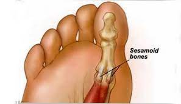

Tulang
Fungsi Tulang
Selain sebagai alat gerak pasif, tulang juga berfungsi sebagai tempat perlekatan otot,
tempat penyimpanan mineral, memfasilitasi pergerakan tubuh,
tempat pembentukan sel darah, tempat produksi sel imun,
dan tempat penyimpanan energi tubuh.

1. Tulang Pipa
Tulang pipa memiliki bentuk silindris memanjang dan berbonggol di kedua ujungnya.
Tulang ini dapat ditemukan pada anggota gerak, yaitu tangan dan kaki.
Tulang pipa berfungsi untuk memfasilitasi pergerakan dengan bekerja seperti tuas.
Contoh tulang pipa antara lain tulang lengan atas dan tulang paha.
2. Tulang Pipih
Seperti namanya, tulang pipih memiliki bentuk yang pipih dan sedikit melengkung.
Tulang ini dapat ditemukan pada kepala, dada, serta pinggul.
Tulang pipih berfungsi untuk melindungi organ vital dan meningkatkan area perlekatan otot.
Contoh tulang pipih antara lain tulang penyusun tengkorak dan tulang belikat.
3. Tulang Pendek
Tulang pendek memiliki bentuk seperti kubus (panjang, lebar, dan tingginya hampir sama).
Tulang ini dapat ditemukan pada pergelangan tangan dan pergelangan kaki.
Tulang pendek berfungsi untuk memberi kekuatan pada area yang memiliki pergerakan terbatas.
Contoh tulang pendek yaitu tulang pada pergelangan tangan dan pergelangan kaki.

4. Tulang Sesamoid
Terakhir yaitu tulang sesamoid. Tulang sesamoid memiliki bentuk seperti biji wijen. Tulang ini dapat ditemukan pada lutut, telapak tangan, dan telapak kaki. Tulang sesamoid berfungsi untuk melindungi tendon dari gesekan dan tekanan. Contoh tulang sesamoid adalah tulang tempurung lutut.
